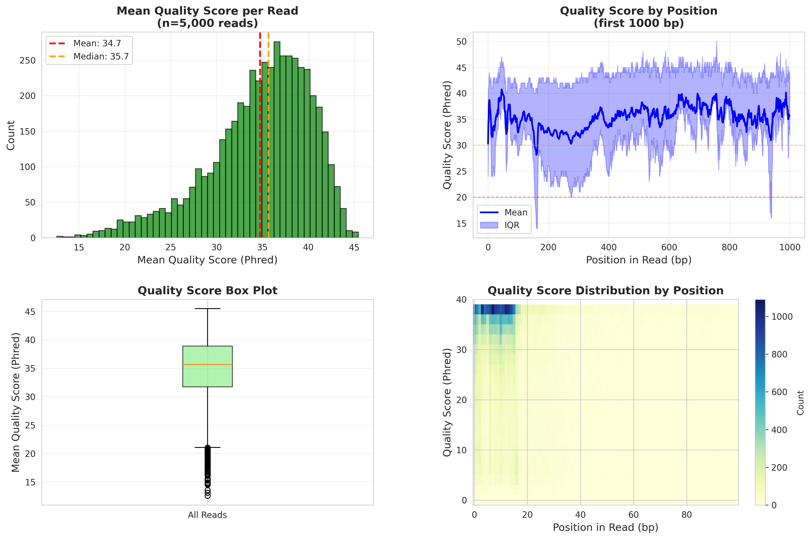
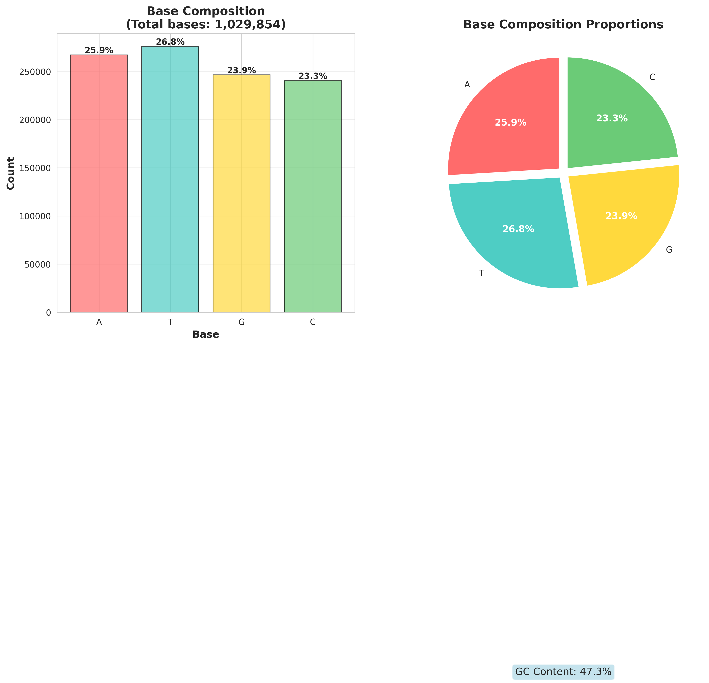

🧬 NanoDemux Raw Data Quality Report
📊 Summary Statistics
TOTAL READS
5,000
reads
TOTAL BASES
1.0
Mb
MEAN LENGTH
206
bp
MEDIAN LENGTH
164
bp
N50
171
bp
MEAN QUALITY
34.7
Phred
GC CONTENT
47.3
%
LENGTH RANGE
100 - 1873
bp
📏 Read Length Distribution
Distribution of read lengths across all reads in the raw FASTQ file. The histogram shows the frequency distribution, while the box plot provides quartile information. N50 is a weighted median that represents the length at which 50% of the total bases are in reads of that length or longer.

📊 Quality Score Analysis
Quality score distributions showing mean quality per read and quality by position in reads. Higher Phred scores indicate higher base-calling confidence. Q20 (99% accuracy) and Q30 (99.9% accuracy) thresholds are commonly used benchmarks.
🧬 Base Composition
Analysis of nucleotide base composition (A, T, G, C) across all reads. Balanced base composition and appropriate GC content are indicators of good sequencing quality.
